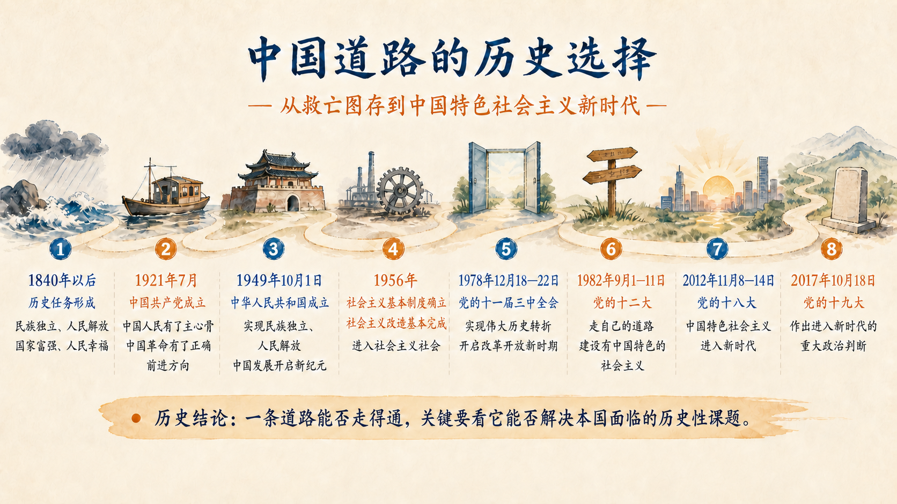
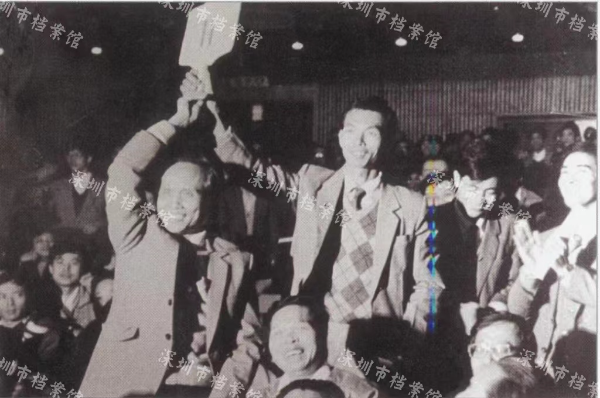

先问道路解决什么问题
“走什么路”并不是给发展贴一个名称，而是决定由谁领导、依靠谁、为了谁，以及用什么制度和方式完成国家发展的历史任务。评价一条道路，既要看它坚持什么基本方向，也要看它能否在本国条件下解决实际问题。教材把道路问题称为关系党的事业兴衰成败第一位的问题，正是因为具体政策可以调整，发展阶段可以变化，但方向一旦偏离，事业的性质和目标也会发生改变。
本节沿着三个问题展开：近代以来中国为什么走上社会主义道路，中国特色社会主义为什么仍然是社会主义，道路、理论、制度、文化为什么共同构成自信的依据。三个问题分别回答道路的历史来源、基本性质和主体信念。
一、中国特色社会主义是历史和人民的选择
“历史和人民的选择”首先是一段解决问题的历史。1840 年鸦片战争以后，争取民族独立、人民解放和实现国家富强、人民幸福成为中国人民的历史任务。各种救国方案先后接受实践检验，却没有改变中国半殖民地半封建社会的性质和人民的悲惨命运。十月革命以后，马克思列宁主义传入中国，中国共产党成立，中国革命有了新的思想引领和组织力量。新民主主义革命的胜利和社会主义基本制度的确立，使民族独立、人民解放和国家制度重建取得根本性进展。

这幅时间线不能被理解成八个孤立年份。它呈现的是历史任务与实践回答的连续关系：近代中国提出救亡图存的任务，中国共产党的成立提供领导力量，新中国成立和社会主义基本制度确立改变了国家与社会的根本面貌，改革开放开创和发展中国特色社会主义，新时代又在新的历史方位上继续回答发展中的问题。因此，所谓“选择”既包含人民的政治意愿，也包含一条道路在长期实践中解决历史性课题的能力。
理解这段历史还必须处理好改革开放前和改革开放后两个历史时期的关系。两个时期在具体方针政策和实际工作上有很大区别，但都属于党领导人民进行社会主义建设的实践探索。改革开放前的探索建立了社会主义基本制度，形成了独立的比较完整的工业体系和国民经济体系，并积累了正反两方面经验；改革开放后的探索在这些条件上实行改革开放，解放和发展社会生产力，开创、坚持、捍卫、发展中国特色社会主义。承认区别，是为了如实理解不同阶段的问题；把握联系，是为了看到中国特色社会主义的历史连续性。用后一时期否定前一时期，或者用前一时期否定后一时期，都会割断这种连续性。
二、中国特色社会主义是社会主义而不是其他什么主义
判断一种制度和道路的性质，不能只看它采用了哪些具体工具。例如，市场机制并不天然决定社会制度的性质，关键要看它处在什么制度结构中、服务于什么发展目标、由什么政治力量领导。中国特色社会主义坚持科学社会主义基本原则，同时根据中国具体实际、历史文化传统和时代要求形成鲜明的中国特色。这里的“坚持”规定根本方向，“发展”使基本原则能够在新的实践条件中得到实现。
中国特色社会主义的社会主义性质，体现在中国共产党的领导、人民主体地位、解放和发展社会生产力、逐步实现全体人民共同富裕、促进人的全面发展等基本要求中，也体现在人民代表大会制度等政治制度以及公有制为主体、多种所有制经济共同发展，按劳分配为主体、多种分配方式并存，社会主义市场经济体制等基本经济制度中。这些内容不是彼此分散的标签，而是共同回答权力怎样组织、发展依靠谁、成果由谁共享以及经济怎样运行。
另一方面，科学社会主义从来不提供一套可以脱离国情机械复制的固定做法。具体制度必须回应生产力发展水平、历史传统和时代条件。由此可以理解，坚持基本原则和推进改革创新并不矛盾：改革要解决制度运行中的实际问题，使中国特色社会主义制度更加成熟更加定型；创新也有方向和边界，不能以改变社会主义性质为代价。
参考资料｜从《共产党宣言》到“经常变化和改革的社会”
1848 年发表的《共产党宣言》第一次全面阐述科学社会主义基本原理，使社会主义从空想走向科学。马克思、恩格斯并没有把未来社会写成一张可以原样施工的制度图纸，而是从资本主义社会的基本矛盾、无产阶级的历史地位和人的解放出发，揭示社会发展的方向与条件。基本原理提供观察社会关系的立场、观点和方法，具体道路则必须由各国人民在实践中探索。
恩格斯晚年在谈到未来社会时指出：“所谓‘社会主义社会’不是一种一成不变的东西，而应当和任何其他社会制度一样，把它看成是经常变化和改革的社会。”这句话的重点不是削弱社会主义基本原则，而是说明社会主义社会本身也处在发展过程中。把基本原则当成不能进入现实的抽象教条，会失去改造世界的力量；把具体变化当成可以放弃根本方向，又会失去判断改革性质的尺度。
因此，理解中国特色社会主义需要同时追问两层问题：第一，它坚持了哪些科学社会主义基本原则；第二，这些原则怎样同中国实际和时代条件结合，形成解决中国问题的制度与实践。二者共同构成“中国特色社会主义是社会主义而不是其他什么主义”的学理基础。
资料来源：马克思、恩格斯《共产党宣言》；恩格斯《致奥托·冯·伯尼克（1890 年 8 月 21 日）》，见《马克思恩格斯选集》第四卷，人民出版社 2012 年版；何毅亭《中国特色社会主义制度好在哪里》，共产党员网，2019 年 12 月 26 日。
案例研究｜深圳经济特区：改革开放怎样坚持社会主义方向
1978 年 12 月，党的十一届三中全会作出把党和国家工作中心转移到经济建设上来、实行改革开放的历史性决策。1979 年，广东提出兴办出口加工区的建议；1980 年 8 月，党和国家批准在深圳、珠海、汕头、厦门设置经济特区。经济特区由此成为改革开放的窗口和先行试验区域。它所面对的核心问题，是怎样在社会主义制度条件下突破束缚生产力发展的体制机制，利用国内国际两个市场、两种资源，加快现代化建设。
深圳的探索不是一次性推出一套完整答案，而是通过授权改革、先行试验和总结推广逐步展开。市场取向改革改善了资源配置方式，对外开放连接资金、技术和市场，科技创新推动产业结构升级，立法和法治建设为持续改革提供规则保障。习近平在深圳经济特区建立 40 周年庆祝大会上的讲话中指出，深圳 40 年间率先进行市场取向的经济体制改革，首创 1000 多项改革举措；地区生产总值从 1980 年的 2.7 亿元增至 2019 年的 2.7 万亿元，外贸进出口总额从 0.18 亿美元增至 4315 亿美元。这里的数字说明发展规模和开放程度发生了巨大变化，但数字本身还不能解释变化为什么发生。
一场土地使用权拍卖怎样推动制度探索
城市建设需要土地，也需要筹集基础设施建设资金。20 世纪 80 年代，深圳开始探索在坚持城市土地国家所有的前提下，将土地所有权与使用权适当分开。深圳市档案馆公布的档案材料记载，1987 年 5 月 21 日，深圳市委讨论土地管理制度改革方案，提出采用拍卖、招标和协议等方式有偿出让土地使用权；同年 11 月，国务院批准深圳、广州开展土地使用权有偿出让试点。
1987 年 12 月 1 日，深圳举行土地使用权公开拍卖。拍卖标的是一块面积 8588 平方米的住宅用地，使用期限 50 年，起拍价 200 万元，每次加价 5 万元，共有 44 家企业参加竞买，其中包括 9 家外资企业。经过竞价，深圳经济特区房地产公司以 525 万元成交。拍卖转让的是一定期限的土地使用权，土地所有权仍然属于国家。1988 年 4 月 12 日，七届全国人大一次会议通过宪法修正案，规定土地的使用权可以依照法律的规定转让。这一过程显示，地方试验、中央批准和国家立法相互衔接，使改革经验进入稳定的制度框架。

这项探索改变了城市建设资源的配置方式，也帮助我们具体理解“改革开放怎样坚持社会主义方向”。采用市场机制并不等于改变土地公有制性质；判断改革方向，需要同时观察基本制度是否坚持、改革是否有利于解放和发展社会生产力、形成的收益怎样服务城市建设与人民生活，以及改革是否在党的领导和法治轨道上推进。市场机制在这里是一种配置资源的手段，它的运行边界、制度目标和公共用途由社会主义制度加以规定。
解释机制需要继续向制度层面追问。首先，经济特区是在党中央决策和全国支持下设立的，改革的政治方向与国家现代化目标是明确的。其次，改革不只引入市场机制，还通过党的领导、人民立场、法治保障、宏观调控和公共服务建设，使市场作用进入社会主义制度框架。再次，试点形成的经验经过评估后向更大范围推广，地方探索与中央顶层设计相互配合。改革由此成为社会主义制度的自我完善和发展，而不是对社会主义方向的放弃。
40 年后，深圳的发展任务已经从解决要素和资本短缺，转向高质量发展、科技创新、民生保障、生态文明和更高水平开放。2019 年发布的支持深圳建设中国特色社会主义先行示范区的意见，把经济、政治、文化、社会、生态文明建设纳入整体部署。这一变化说明，改革开放越深入，越需要在发展目标、制度保障和人民利益之间形成系统安排。
讨论题
- 市场机制可以被不同社会制度采用。判断深圳改革的社会主义方向，应当观察哪些制度条件和发展目标？
- 为什么改革试点既需要地方探索，也需要中央授权、法治规则和经验推广？
- 如果一项改革明显提高效率，却使部分群体更难获得基本公共服务，应当怎样依据案例中的原则进行调整？
资料来源：深圳市档案馆，《新中国土地拍卖“第一槌”》，2023 年 1 月 9 日；习近平《在深圳经济特区建立 40 周年庆祝大会上的讲话》，新华社，2020 年 10 月 14 日；《中共中央、国务院关于支持深圳建设中国特色社会主义先行示范区的意见》，2019 年 8 月 9 日，商务部转载。
三、坚定道路自信、理论自信、制度自信、文化自信
中国特色社会主义道路、理论体系、制度和文化分别回答不同层面的问题。道路是实现途径，理论体系是行动指南，制度是根本保障，文化是精神力量。四者统一于中国特色社会主义伟大实践，因此“四个自信”不是四种彼此分离的态度，也不是离开事实的情感表达。
道路自信要回答这条道路是否符合中国实际、能否创造人民美好生活；理论自信要考察理论能否科学解释问题并指导实践；制度自信要看制度是否符合国情、有效管用、得到人民拥护，并具有自我完善能力；文化自信则提供最深层、更持久的价值认同和精神力量。实践成就、人民创造和理论真理性共同构成自信的根基。
自信也不等于回避问题。只有能够认识矛盾、纠正偏差、推进改革，自信才具有现实内容。面对一个具体问题，可以使用“四层追问”：道路是否明确发展方向，理论是否提供认识工具，制度是否形成稳定规则，文化是否提供价值共识。这样，“四个自信”便从抽象概念转化为分析中国特色社会主义实践的框架。